Tudo o que você precisa para sair de R$3 mil/mês para R$10-15 mil em até 90 dias, trabalhando 4-6h/dia, SEM consultório físico.
STARTER KIT (ACESSO IMEDIATO - 30 DIAS)
"PRIMEIROS R$1.500 EM 30 DIAS SEM LARGAR SEU EMPREGO"
3 módulos ultra-práticos | 58min de vídeo | Resultado em 30 dias
✓ Módulo SK.1: Quanto Cobrar Sem Medo de Perder Paciente
Tabela de precificação Nordeste 2026 (BA/PE/CE/RN)
Calculadora valor/hora personalizada
3 scripts WhatsApp para objeções de preço
✓ Módulo SK.2: Seus 3 Primeiros Pacientes em 48 Horas
Método círculos concêntricos (lista 50 contatos)
Google Meu Negócio em 30 minutos
Mensagem de oferta que converte
✓ Módulo SK.3: WhatsApp Que Fecha - Do "Oi" ao Agendamento
Script de triagem (5 perguntas)
Como cobrar sem gaguejar
Confirmação que reduz no-show
RESULTADO ESPERADO: 3 pacientes agendados, R$450-600 em mãos, confiança restaurada.
8 MÓDULOS COMPLETOS (IMPLEMENTAÇÃO PASSO A PASSO)
MÓDULO 1 | "PARANDO DE SE SENTIR 'SÓ MAIS UMA'"
Mentalidade de Fisioterapeuta Valorizada (Semana 1-4)
O que você vai transformar:
✓ Como quebrar a Síndrome do Impostor ("Eu NÃO sou boa o suficiente")
✓ Você Merece Ganhar Bem Ajudando Pessoas (eliminando culpa)
✓ De Escassez para Abundância: Reprogramando relação com dinheiro
✓ Identificando Suas Sabotagens Invisíveis (e como pará-las)
✓ 15 Minutos/Dia Que Mudam Tudo: Sistema anti-procrastinação
✓ Seu Plano de 90 Dias: Da ansiedade à clareza total
RESULTADO: Fim da culpa ao cobrar, mentalidade de empresária, plano 90 dias traçado.
MÓDULO 2 | "VIRANDO REFERÊNCIA SEM VIRAR INFLUENCER"
Posicionamento Estratégico Premium (Semana 3-6)
O que você vai construir:
✓ Quem Você É Hoje vs Quem Você Quer Ser (espelho sem filtro)
✓ Sua Visão de Futuro: Como se apresentar daqui 1 ano
✓ Lista Brutal: 10 coisas que você precisa mudar agora
✓ Autoridade Sem Likes: Como ser respeitada sem ser famosa
✓ Sua Frase de Ouro: O que te diferencia de 278 mil fisioterapeutas
✓ Escolhendo Seu Nicho Lucrativo (sem se sentir presa)
✓ O Que Vestir Para Transmitir Autoridade (guia de compras com links)
✓ Como Construir Autoridade Regional (offline + online)
✓ Visibilidade Que Atrai Pacientes (não curiosos)
✓ Sua Primeira Palestra: Roteiro pronto 20 minutos
✓ Criando Sua Tribo: Comunidade que te defende
RESULTADO: Nicho escolhido, USP clara, posicionamento premium, autoridade construída.
MÓDULO 3 | "INSTAGRAM QUE AGENDA"
Marketing Digital Que Converte (Semana 5-10)
O que você vai dominar:
✓ Transformando Seu Perfil em Máquina de Agendamento (checklist 15 itens)
✓ Bio Que Atrai Paciente Certo (50 templates editáveis)
✓ Posicionamento: Como ser levada a sério (não só seguida)
✓ Conteúdo Que Engaja E Vende: Carrossel, Reels, Stories estratégicos
✓ Calendário Editorial 365 Dias (pronto para usar)
✓ Ferramentas Práticas: Canva, CapCut, IA que economizam 70% do tempo
✓ Análise de Métricas e Reciclagem (1 post = 5 formatos)
✓ 6 Prompts de IA para criação de conteúdo
✓ Crescendo Organicamente sem comprar seguidores
✓ BASTIDORES REAIS: Um dia comigo faturando R$12k em 5 horas
✓ Aba Explorar: Como aparecer para não-seguidores
✓ Google Meu Negócio: Aparecer em "fisioterapeuta perto de mim"
RESULTADO: 3-5 pacientes/mês via Instagram, autoridade construída, conteúdo que converte.
META DE FATURAMENTO: R$10.000-15.000/mês
MÓDULO 4 | "WHATSAPP QUE FECHA"
Funil de Conversão + Soft Skills (Semana 11-13)
O que você vai implementar:
✓ Do Instagram ao WhatsApp: O caminho sem perder leads
✓ 6 Scripts Prontos de Conversão: Apresentação, triagem, objeções, fechamento
✓ Identificando 'Paciente Problema' antes de perder tempo
✓ Automatizando Respostas sem parecer robô
✓ Falando de Tratamento Sem 'Fisioterapês' (linguagem que paciente entende)
✓ Alinhando Expectativas: Evitando frustrações
✓ Lidando com Pacientes Difíceis (5 perfis problemáticos)
✓ Networking Estratégico: Parcerias com médicos e academias (script de abordagem)
RESULTADO: Taxa de conversão 40-60%, agenda preenchida com 2 semanas antecedência.
META DE FATURAMENTO: R$12.000-18.000/mês
MÓDULO 5 | "COBRANDO SEU VALOR REAL SEM CULPA"
Gestão Financeira e Precificação (Semana 14-16)
O que você vai dominar:
✓ Calculando Seu Valor REAL (não "média do mercado")
✓ Tabela Nordeste 2025: Quanto cobrar em Salvador, Recife, Fortaleza
✓ Scripts Anti-Objeção: "Tá caro", "Fulano cobra menos", "Não tenho agora"
✓ Apresentando Seu Preço Como Investimento (não gasto)
✓ De Sessão Avulsa a Pacotes Recorrentes (estabilidade financeira)
✓ Respondendo 'Tá Caro' Sem Baixar Preço (técnica da ancoragem)
✓ Precificando Tudo: Avaliação, pacotes, planos, consultorias
✓ Gestão Financeira Descomplicada (separando pessoal de profissional)
✓ Planejamento 12 Meses: Nunca mais quebrar em janeiro
✓ Planilhas Financeiras Completas (controle pessoal e profissional)
RESULTADO: Preço justo definido (R$150-250/sessão), finanças organizadas, vendas recorrentes.
META DE FATURAMENTO: R$6.000-8.000/mês
MÓDULO 6 | "PACIENTES QUE VOLTAM E INDICAM"
Fidelização e Indicação (Semana 17-19)
O que você vai implementar:
✓ Experiência Memorável: 7 microdetalhes que fazem paciente te amar
✓ Avaliação Que Já Vende o Pacote (fechamento natural)
✓ Pedindo Indicação Sem Parecer Desesperada (frase mágica)
✓ Programa de Fidelidade Simples que realmente funciona
✓ Transformando Paciente em Defensor da sua marca
RESULTADO: 40-60% receita de indicações, pacientes fiéis, retenção alta.
MÓDULO 7 | "SENDO ENCONTRADA PELOS PACIENTES CERTOS"
Tráfego Inteligente (Semana 20-22)
O que você vai dominar:
✓ Google Meu Negócio: Seus primeiros 10 pacientes orgânicos
✓ Parcerias Locais Que Enchem Agenda (script abordagem de médico)
✓ Instagram Ads na Prática: R$300 que viraram 12 agendamentos
✓ Google Ads Para Busca Local: Aparecer quando precisam de você
✓ 5 Erros Que Queimam R$2 Mil sem retorno (e como evitar)
✓ Métricas Que Realmente Importam (dashboard semanal)
✓ Quando Vale a Pena Contratar Gestor de Tráfego
✓ Case Real Documentado: R$800 em anúncios = R$8.400 em vendas
RESULTADO: Fluxo previsível de 5-10 leads/semana, ROI positivo, independência de indicação.
META DE FATURAMENTO: R$15.000-25.000/mês
MÓDULO 8 | "DO SONHO À REALIDADE"
Escalabilidade e Formalização (Semana 23-24)
O que você vai estruturar:
✓ Abrindo MEI em 30 Minutos (passo a passo tela compartilhada)
✓ Consultório Caseiro R$800 vs Comercial R$50 Mil (tour real)
✓ Processos e Protocolos: Do agendamento ao pós-alta
✓ Contratos Que Te Protegem (3 modelos editáveis)
✓ Ficando em Dia com COFFITO e Vigilância Sanitária
✓ Seu Plano de Crescimento 12 Meses (do solo ao time)
✓ Estratégias Avançadas de Crescimento para R$30k+
✓ Automação Inteligente com IA (ganho 30% tempo)
✓ Plano de Ação para Evolução Contínua
RESULTADO: Negócio formalizado, processos padronizados, planejamento de expansão.
META DE FATURAMENTO: R$20.000-50.000+/mês
BÔNUS EXCLUSIVOS (ACESSO IMEDIATO)
BÔNUS 1 | Kit de Templates Prontos (VALOR: R$1.497)
Kit Instagram Profissional:
50 modelos de bio para Instagram (diferentes nichos - Canva editável)
365 templates de posts educativos (Canva editável)
365 sequências de stories com CTA
365 roteiros prontos de Reels (hook + estrutura completa)
Calendário editorial 365 dias preenchido
20 prompts de IA para criação de conteúdo
Kit WhatsApp de Conversão:
20 scripts profissionais (contato, triagem, fechamento, objeções, follow-up)
Respostas rápidas para 20 dúvidas comuns
Mensagens de boas-vindas automáticas
BÔNUS 2 | Planilhas e Calculadoras (VALOR: R$797)
✓ Planilha de Precificação Inteligente (cálculo automático)
✓ Planilha de Agenda e Organização de Pacientes (Google Sheets)
✓ Checklist Semanal de Implementação (12 semanas)
✓ Calculadora de ROI de Marketing (mede resultados)
✓ Controle Financeiro Completo (pessoal + profissional - 12 meses)
✓ Projeção Financeira 12 Meses (Excel editável)
BÔNUS 3 | Persuasão e Prova Social (VALOR: R$497)
✓ Guia Completo Para Coletar Depoimentos (passo a passo ético)
✓ Templates Para Prints de WhatsApp e Instagram (prova social)
✓ Termo de Autorização de Uso de Imagem (LGPD completo)
✓ Mini-Guia: Como pedir indicação profissionalmente (frase mágica)
✓ Guia de Postura Profissional e Autoridade (roupas, jalecos, comportamento)
BÔNUS 4 | Atualização Clínica Premium (VALOR: R$497)
✓ Pós-Operatório de Varizes (protocolo completo sessões 1-10)
✓ Lipedema: Diagnóstico e Tratamento Lucrativo (nicho R$200-300/sessão)
✓ Linfedema na Prática (membros superiores e inferiores)
✓ Postura Profissional: Protegendo SEU Corpo (ergonomia)
BÔNUS 5 | CLT vs Autônomo vs Concurso (VALOR: R$297)
✓ Vídeo 18min: Tabela comparativa honesta
✓ Planilha: "Calcule qual compensa PARA VOCÊ"
✓ Depoimento real: "Passei em concurso R$6,5k mas escolhi particular R$15k"
BÔNUS 6 | 10 Casos Reais do Nordeste (VALOR: R$797)
✓ 10 vídeos depoimentos (Salvador, Recife, Fortaleza, Feira de Santana)
✓ Timeline completa de transformação (R$3k → R$12-15k)
✓ Prints de agenda/faturamento (dados borrados)
✓ O que funcionou + O que NÃO funcionou (lições)
BÔNUS 7 | Tour Consultório Caseiro (VALOR: R$197)
✓ Vídeo 12min: Tour completo sala em casa
✓ Lista de compras (Amazon/Mercado Livre com links)
✓ Comparativo: R$800 vs R$2.500 vs R$50 mil
MENTORIAS AO VIVO COM TAIS (VALOR: R$4.997)
12 Semanas de Acompanhamento Intensivo:
✓ Mentoria de Abertura: Plano de 90 dias personalizado
✓ Mentoria de Precificação: Simulação de objeções reais (role play)
✓ Mentoria de Instagram: Avaliação ao vivo do SEU perfil
✓ Mentoria de Prova Social: Feedback em tempo real
✓ Plantão de Dúvidas Quinzenal (sem limite de perguntas)
✓ Roda de Cases Mensal com alunas destaque
✓ 1 Consultorias Individuais por semana durante 90 dias 1:1 (30min cada - momentos críticos)
COMUNIDADE VIP + NETWORKING (VALOR: R$1.997/ano)
Acesso Vitalício:
✓ Grupo Exclusivo no Telegram ou WhatsApp
✓ Lives Mensais com especialistas convidados (médicos, contadores, advogados)
✓ Biblioteca de Aulas Extras e atualizações constantes
✓ Networking para parcerias e indicações entre alunas
✓ Ranking de Engajamento com gamificação (premiação trimestral)
✓ Meetups Presenciais Trimestrais (Salvador, Recife, Fortaleza)
CERTIFICAÇÃO OFICIAL (VALOR: R$497)
✓ Certificado Digital do Método Fisío Extraordinario
✓ Listagem no Diretório Oficial de alunas certificadas
✓ Prioridade em Parcerias estratégicas futuras
✓ Descontos em Próximos Cursos (20-30% OFF)
Requisitos: 80% módulos + Starter Kit + 6 mentorias + 1 depoimento
SUPORTE PREMIUM (VALOR: R$997)
✓ Suporte via WhatsApp/Telegram (resposta 24-48h - 12 semanas)
✓ Revisão Individual do Instagram (análise completa na Semana 5)
✓ Acompanhamento Até Primeiro Resultado Concreto (não te largo)
✓ Ajustes de Rota Personalizados (se travar, direcionamento específico)
GARANTIA BLINDADA (SEM RISCO)
"R$2.000 DE AUMENTO EM 90 DIAS OU SEU DINHEIRO DE VOLTA"
Condições simples:
Implementar 100% Starter Kit
Participar mínimo 8 mentorias
Aplicar estratégias de 3 fases
Documentar ações no grupo
Se NÃO aumentar R$2.000/mês:
✅ Devolução integral R$1.497
✅ Zero burocracia
✅ Fica com TODO material
Processo simples e sem enrolação.
BÔNUS PARA AS PRIMEIRAS 10 ALUNAS (VALOR: R$1.297 )
⚡ Consultorias Individuais EXTRAS de 1h com Tais (R$997)
⚡ Acesso Antecipado a novos conteúdos por 12 meses (R$497)
⚡ Prioridade nas Mentorias ao vivo (suas perguntas primeiro - R$297)
⚡ Sessão de Fotos Profissional em grupo no meetup (R$800)
⚡ Listagem Destacada no diretório (aparece no topo - R$197)
✅ FORMAS DE PAGAMENTO
12x de R$124,75 (sem juros no cartão)
R$ 1,497,00 à vista (10% desconto PIX/boleto)
VAGAS LIMITADAS: 20 alunas/turma (garantir qualidade)
BÔNUS RELÂMPAGO: Expira 48h ou 20 matrículas
Carla, é HOJE que você para de ganhar R$3 mil e começa a viver com R$10-15 mil/mês, trabalhando 4-6h/dia, COM tempo para seus filhos.
Seus primeiros R$1.500 em 7 dias te esperam.
 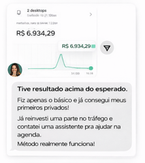
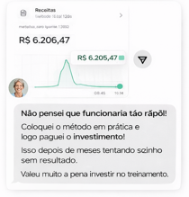
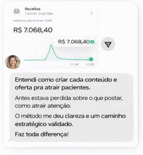
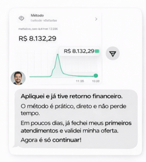
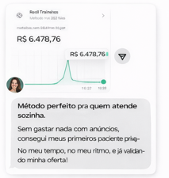
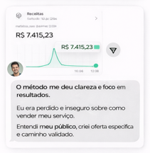
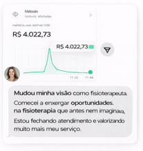
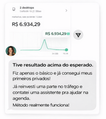
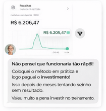
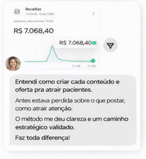
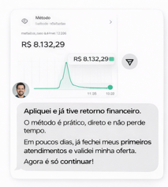
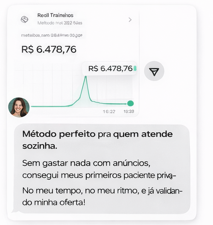
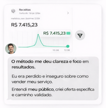
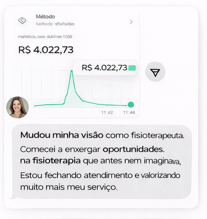